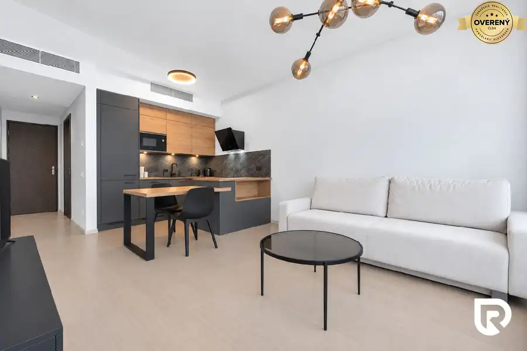

3i byt s veľkou výmerou v Pezinku v pôvodnom stave
Pezinok
- Dispozícia3-izbový
- Plocha79.21 m²
- Poschodie3. z 8
- Stavpôvodný
- Vlastníctvoosobné
O nehnuteľnosti
Hľadáte priestranný byt pre rodinu vo vyhľadávanej časti Pezinka, ktorý si môžete prerobiť presne podľa vlastných predstáv?
Byt s veľkorysou výmerou, lodžiou a kompletnou občianskou vybavenosťou doslova pár krokov od domu?
V zastúpení majiteľa vám ponúkame na predaj 3-izbový byt na ulici L. Novomeského v Pezinku, ktorý sa nachádza na 3. poschodí zrekonštruovaného bytového domu s výťahom.
Byt ponúka celkovú výmeru 79,21 m² s lodžiu približne 4 m². K bytu prislúcha aj murovaná pivničná kobka o výmere 4 m² na prízemí bytového domu.
DISPOZÍCIA
Po vstupe vás privíta priestranná chodba s dostatkom miesta na úložné riešenia.
Obývacia izba ponúka príjemný priestor na každodenné fungovanie aj trávenie času s rodinou.
Kuchyňa s výstupom na lodžiu pôsobí vzdušne a prirodzene prepája interiér s exteriérom. K dispozícii sú dve samostatné nepriechodné izby, ktoré môžu slúžiť ako spálňa, detská izba či pracovňa. Komfort bývania dopĺňa samostatná kúpeľňa s vaňou a oddelené WC.
Byt pôsobí veľkoryso a vzdušne, pričom ponúka množstvo možností, ako si vytvoriť moderné bývanie podľa vlastného štýlu. Nehnuteľnosť je v pôvodnom stave a pripravená na kompletnú rekonštrukciu.
Výhodou je, že byt sa predáva vyprataný, takže rekonštrukčné práce môžete začať prakticky ihneď po kúpe. Elektroinštalácia bola menená v roku 1992 vrátane elektrických rozvodov.
Veľkým benefitom je aj samotný bytový dom, ktorý prešiel kompletnou rekonštrukciou. Bytový dom je zateplený, má novú sedlovú strechu, zrekonštruované spoločné priestory, nové odpady, ríny, poštové schránky aj výťah. Na streche sa nachádzajú solárne panely a výhodou je aj vlastná kotolňa, ktorá zabezpečuje efektívnejšie vykurovanie domu.
ZÁKLADNÉ ÚDAJE:
Poschodie: 3/8
Výmera bytu: 79,21 m²
Lodžia: cca 4 m²
Murovaná pivnica: 4 m²
3 samostatné izby
Samostatná kúpeľňa a WC
Plastové okná
Výťah
Kompletná rekonštrukcia potrebná
Mesačné náklady: orientačne 290€
LOKALITA:
Byt sa nachádza vo vyhľadávanej lokalite Pezinok – Sever, ktorá ponúka výbornú občiansku vybavenosť a príjemné rodinné bývanie. Priamo oproti bytovému domu sa nachádzajú potraviny CBA, v pešej dostupnosti je pošta, materská škola, základná škola, detský lekár aj kúpalisko. Lokalita je ideálnou voľbou pre rodiny, páry aj jednotlivcov, ktorí chcú mať všetko potrebné na dosah a zároveň bývať v pokojnom prostredí.
CENA: 228.000€
Pre lepšiu predstavu o dispozícii a priestore je k dispozícii aj 3D obhliadka.
https://my.matterport.com/show/?m=jD5VCRBPrs9
V prípade záujmu o obhliadku ma neváhajte kontaktovať.
Zodpovedný maklér:
Ing. Kristína Dičér
RADO Reality Group
Tel.:
E-mail:
RADO Reality Group je ocenená Realitnou úniou ako najlepšia realitná kancelária na Slovensku za roky 2022 a 2023. Okrem iného sme držiteľmi ďalších 6 prestížnych ocenení.
Uvedená cena je konečná, pokiaľ sa zmluvné strany nedohodnú inak a nenavyšuje sa o odmenu sprostredkovateľa, v cene je zahrnuté právne poradenstvo, vyhotovenie nájomných zmlúv.
Text inzerátu a fotografie sú autorským dielom spoločností Ideálny nájomca by Renthub s.r.o. a RADO Reality Group s.r.o. a bez ich súhlasu ich nie je možné kopírovať.
Parametre
| Celková rozloha | 79.21 m² |
|---|---|
| Úžitková plocha | 79.21 m² |
| Poschodie | 3/vyššie poschodie |
| Počet poschodí | 8 |
| Počet izieb | 3 |
| Vlastníctvo | osobné |
| Stav | pôvodný |
| Odvoz odpadu | áno |
| Plyn | áno |
| Kúpeľňa | vaňa |
| Vykurovanie | spoločné – vlastná kotolňa |
| Balkón | nie |
| Lódžia | áno |
| Terasa | nie |
| Pivnica | áno |
| Garáž | nie |
| Výťah | áno |
| Parkovanie | nie |
| Postavené z | panel |
| Zariadenie | nezariadený |
| Zateplený objekt | áno |
| Krb | nie |
| Klimatizácia | nie |
| Energetický certifikát | nie |
| Predzáhradka | nie |
| Bezbariérový prístup | nie |
| Okná | plastové |
| Dátum zverejnenia | 27. 5. 2026 |
Kde to je
Mohlo by Vás zaujímať
 Byt10
2 300 €Luxusny 4-izbový byt s panoramatickým výhľadom- Staré Mesto
Staré Mesto, Bratislava
4-izbový104 m²2. podlažie
Ponúkame na prenájom veľkorysý a svetlý 4-izbový byt nachádzajúci sa v prestížnej lokalite Bratislava – Staré Mesto, Javorinská ulica. Byt poskytuje…
Byt10
2 300 €Luxusny 4-izbový byt s panoramatickým výhľadom- Staré Mesto
Staré Mesto, Bratislava
4-izbový104 m²2. podlažie
Ponúkame na prenájom veľkorysý a svetlý 4-izbový byt nachádzajúci sa v prestížnej lokalite Bratislava – Staré Mesto, Javorinská ulica. Byt poskytuje…
 Rodinné domy10
575 000 €NOVÁ CENA- 5 izbový rodinný dom v Malinove | 751 m² pozemok
Malinovo
5-izbový338 m²
Hľadáte pokojné rodinné bývanie v zastavanej časti Malinova s dostatkom priestoru, súkromia a potenciálu? Dom obklopený záhradou plnou ovocných…
Rodinné domy10
575 000 €NOVÁ CENA- 5 izbový rodinný dom v Malinove | 751 m² pozemok
Malinovo
5-izbový338 m²
Hľadáte pokojné rodinné bývanie v zastavanej časti Malinova s dostatkom priestoru, súkromia a potenciálu? Dom obklopený záhradou plnou ovocných…

Byt10 380 000 €3. veža v projekte Sky Park | 2-izbový byt na 25. poschodí Staré Mesto, Bratislava 2-izbový49.16 m²25. podlažie RADO Reality vám ponúka na predaj kompletne zariadený 2-izbový byt v tretej rezidenčnej veži ikonického projektu SKY PARK od svetoznámeho…